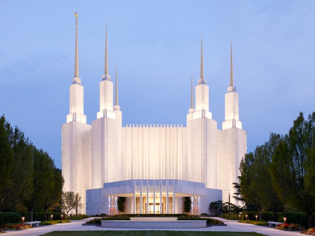
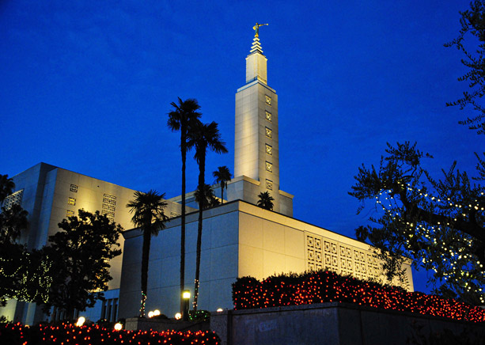
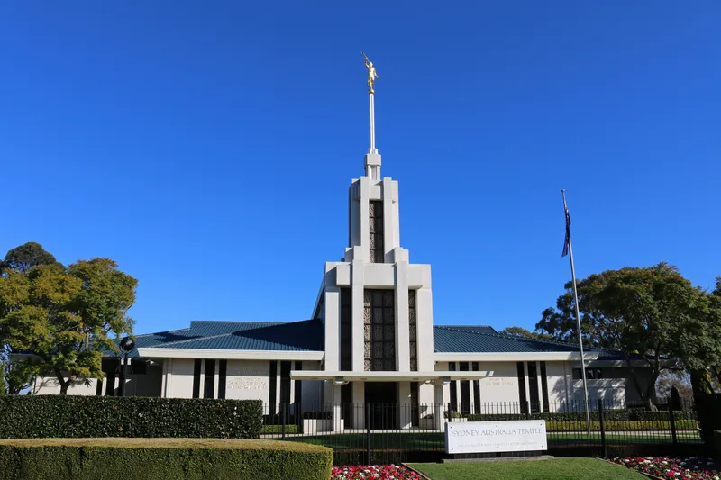
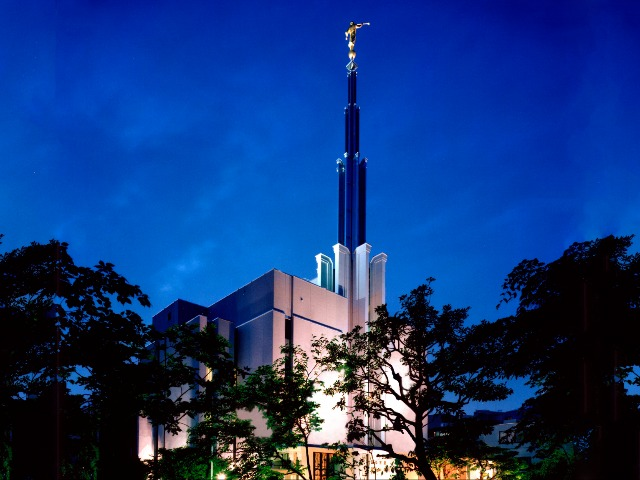
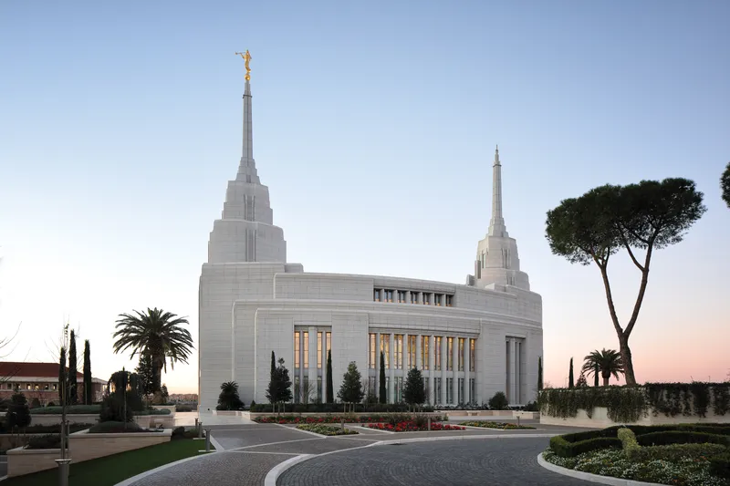

Temple Album
☰
Home
All
Old
New
Large
Small
Temples of The Church of Jesus Christ
Salt Lake Temple
Provo City Center Temple
Nauvoo Illinois Temple

Washington D.C. Temple

Los Angeles California Temple
Mexico City Mexico Temple
London England Temple

Sydney Australia Temple
Johannesburg South Africa Temple

Tokyo Japan Temple
Paris France Temple

Rome Italy Temple